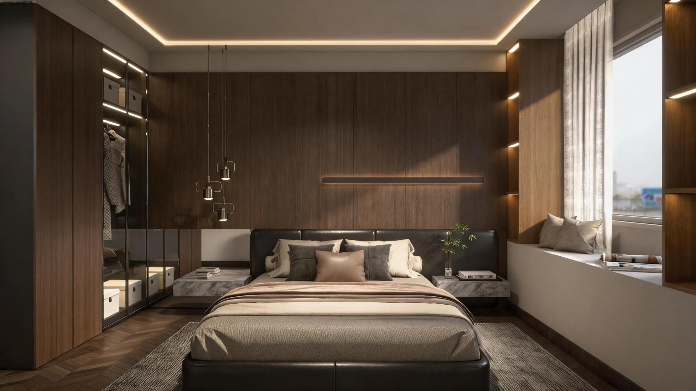
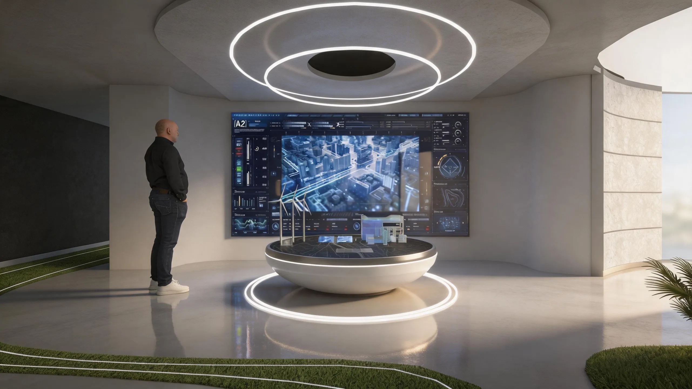
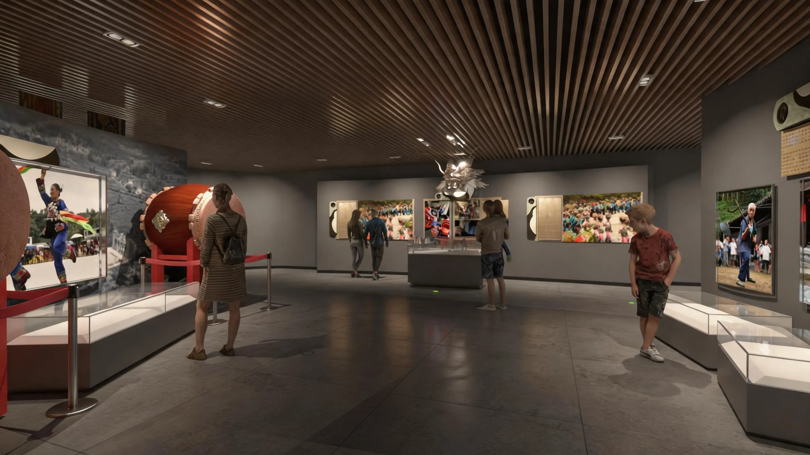
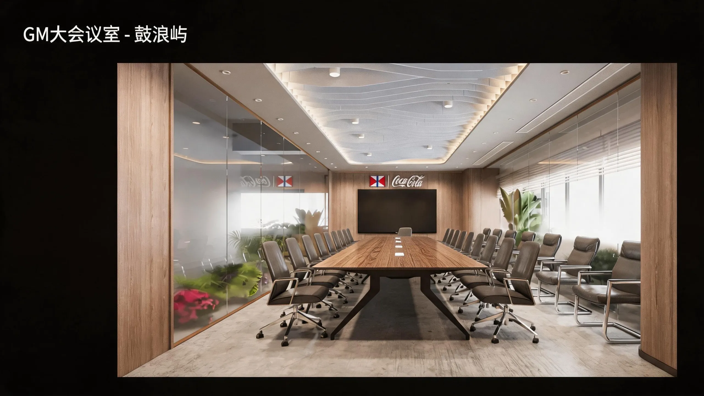

×
鼠标滚轮缩放 · 拖拽移动 · 左右切换 · Esc 退出
双指缩放 · 左右滑动切换
Design Philosophy
环境艺术设计背景，专注商业空间、酒店改造与品牌展厅的视觉化呈现。我相信好的效果图不止于写实，更应该传递空间的情绪与使用场景。
熟练运用3ds Max与VRay建立标准化高效工作流，从建模、灯光到后期输出，能够快速配合设计团队完成方案视觉化，以效率驱动创意落地。
Selected Projects

大量使用原木格栅与微水泥，暖色灯光营造沉稳治愈氛围。
融合民族特色与现代工业美学，以红白主色结合在地图案。


深植于苗族文化底蕴，粗犷原石堆叠与现代金属材质进行空间叙事。

玻璃幕墙与立体绿植墙彰显自然与可持续发展。
High Efficiency Workflow
从CAD到最终渲染输出，建立标准化的材质库与灯光预设，大幅压缩制作周期。平均工装空间3-5天完成全案视觉表达，且保证写实质感。
高效的商业空间拓扑与曲面建模，适应频繁方案修改。
自研灯光体系与材质库，保障出图效率的同时维持照片级真实感。
概念阶段快速生成氛围参考，缩短前期沟通成本，扩展创意边界。
通过镜头构图、材料质感与光影氛围，强化设计的商业叙事能力。
Start a project
填写以下信息，我会在24小时内与你沟通具体需求与报价。